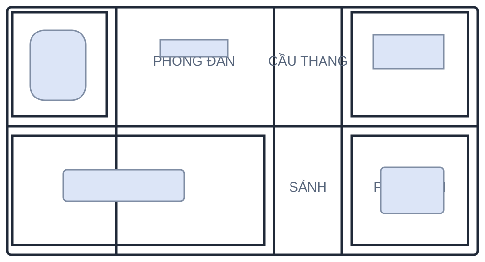

Tổng quan
Theo dõi trạng thái thẻ và khu vực trong nhà
Bản đồ nhanh
Vị trí gần nhất của các thẻ

Cần chú ý
Các trạng thái cần xử lý
Hoạt động gần đây
Cập nhật trong hệ thống
Danh sách thẻ
Gia đình và khách đang sử dụng hệ thống
| Người dùng | Mã thẻ | Loại | Khu vực | Pin | Trạng thái |
|---|
Cảnh báo hệ thống
Các cảnh báo đang mở